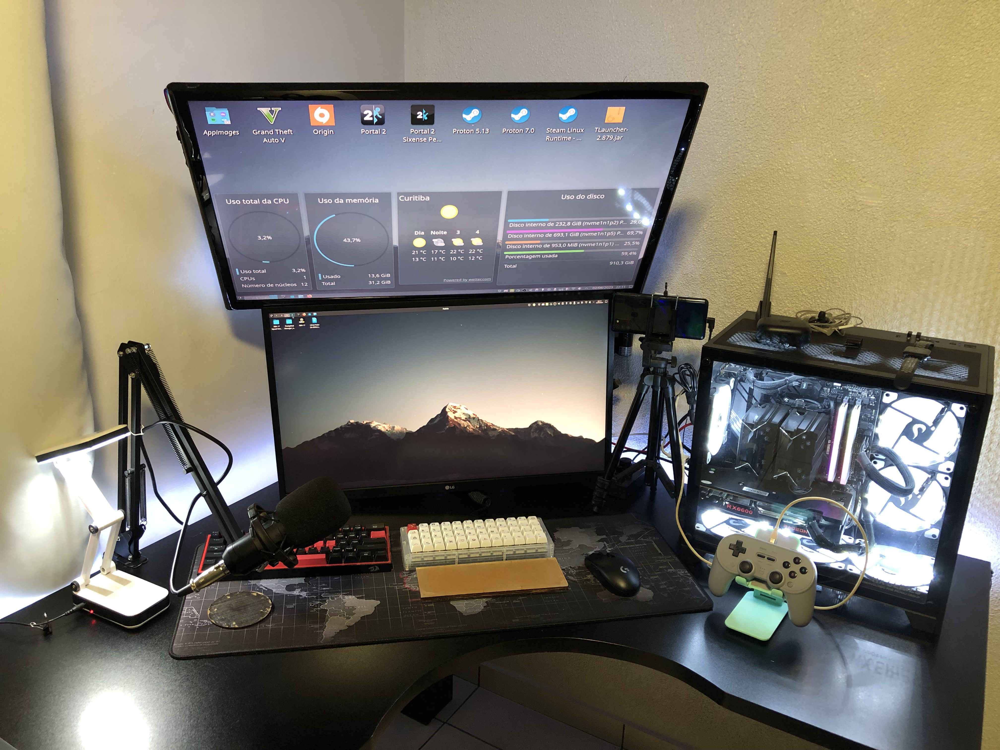

⚒️ Eu uso
Lista de ferramentas, equipamentos, configurações e serviços que eu utilizo diariamente. Página inspirada por uses.tech.

🧰 Meus equipamentos
🖥 Principal
- CPU: AMD Ryzen 5 5600;
- RAM: 32GB 3600GHz;
- GPU: Radeon RX 6600;
- Armazenamento: 1TB NVMe PCIe 4.0 + 1TB NVMe PCIe 3.0
- Monitores: LG 4K 27” 27UL500 + TV Samsung 32” UN32J4300
⌚ Periféricos
- Teclados: Momo 40% Ortholinear + Redragon K616 (para jogar);
- Mouse: Logitech G305
- Fone: KZ x Crinbacle ZEX Pro
- Câmera: iPhone 8 / Samsung Galaxy A21s
- Microfone: BM500 + Mesa de Som V3
- Controle: 8 BitDo Pro 2
💻 Laptop
As especificações do meu Thinkpad T490 são:
- CPU: Intel i5-8365U (8) @ 4.100GHz;
- RAM: 24 GB;
- GPU: GPU: Intel WhiskeyLake-U GT2 [UHD Graphics 620];
- Tela: 14” 1366x768 TFT LCD
🧑💻 Software
_,met$$$$$gg. calebe94@calebian
,g$$$$$$$$$$$$$$$P. OS: Debian 12 bookworm
,g$$P"" """Y$$.". Kernel: x86_64 Linux 6.1.0-9-amd64
,$$P' `$$$. Uptime: 14h 39m
',$$P ,ggs. `$$b: Packages: 3798
`d$$' ,$P"' . $$$ Shell: zsh 5.9
$$P d$' , $$P Resolution: 3840x2928
$$: $$. - ,d$$' DE: KDE 5.103.0 / Plasma 5.27.5
$$\; Y$b._ _,d$P' WM: KWin
Y$$. `.`"Y$$$$P"' GTK Theme: Breeze [GTK3]
`$$b "-.__ Icon Theme: breeze-dark
`Y$$ Disk: 497G / 928G (57%)
`Y$$. CPU: AMD Ryzen 5 5600 6-Core @ 12x 3,5GHz
`$$b. GPU: AMD Radeon RX 6600 (navi23, LLVM 15.0.6, DRM 3.49, 6.1.0-9-amd64)
`Y$$b. RAM: 12490MiB / 31976MiB
`"Y$b._
`"""" 📅 Dia a dia
- Sistema Operacional: Debian “testing”
- Ambiente Gráfico: KDE
- Navegador: Firefox para navegar na internet com as seguintes extensões:
- Fonte: JetBrains do Nerd Fonts.
- Gerenciador de senhas: Pass;
- Nextcloud para armazenamento em nuvem e sincronizar arquivos entre meus dispositivos;
- Lançador de aplicações: KRunner e dmenu + tlaunch;
- Gerenciador de arquivos: Dolphin;
- Gerenciador de sites favoritos: tbm;
- Gerenciador de atalhos de teclado: sxhkd;
- Visualizador de PDF: zathura;
- Visualizador de imagens: sxiv;
💾 Programação
- IDE/editor de texto/notas/TUDO: EMACS para absolutamente
TUDO, desde gerenciamento de notas, tarefas e agenda e até para
programação.
- Eu uso o
emacscom a framework doomemacs;
- Eu uso o
- terminal: st;
- linguagens favoritas: C, Python e Shell Script;